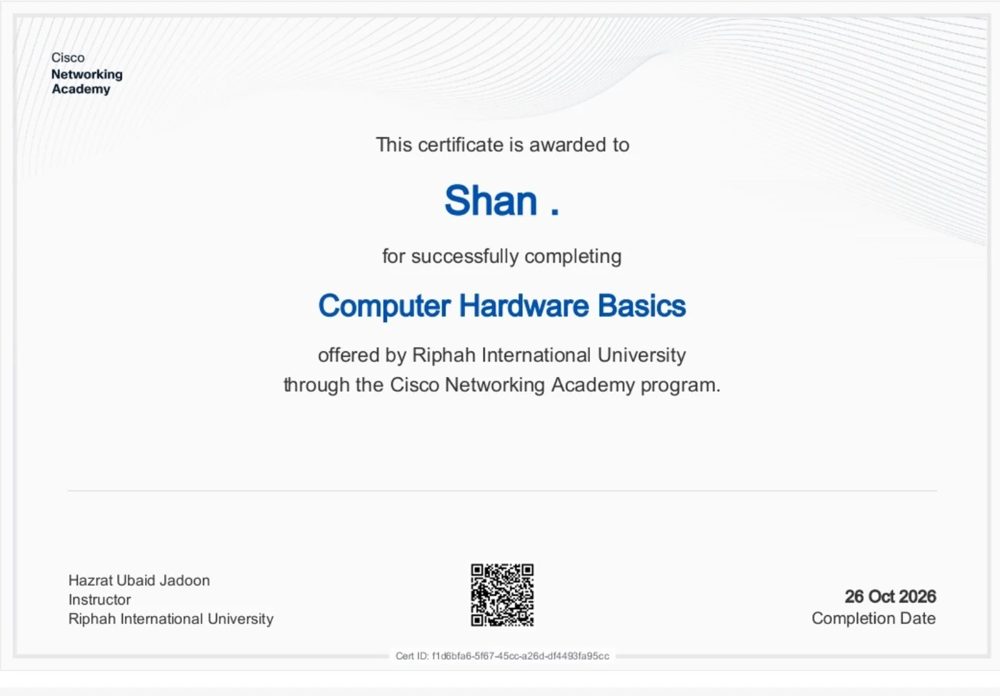
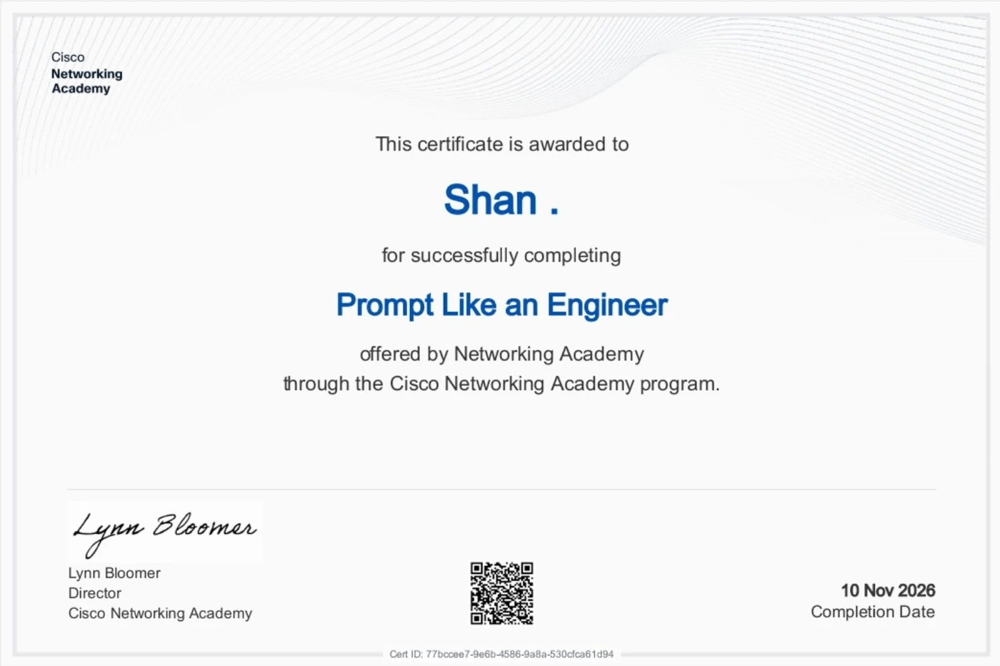

Spam classifier
Mean cross-validation accuracy for logistic regression on Spambase. Academic experiment, not a deployed detector.
View results ↗Hello, I'm Shan ✳
I'm a BS Artificial Intelligence student at Riphah International University. I translate classroom theory into working software — from ML experiments to C++ systems and explainable dashboards.
A growing collection of real coursework, group builds and technical experiments. Open a case study for its implementation, images, limits and original GitHub source.
No projects match that search. Try another keyword or filter.
Explore the code, project reports, tests and university exercises on GitHub.
The strongest work is inspectable. These numbers come from saved coursework reports and tests, with the original context preserved.
Mean cross-validation accuracy for logistic regression on Spambase. Academic experiment, not a deployed detector.
View results ↗Held-out R² for multiple linear regression using all eight input variables on the coursework dataset.
View results ↗Historical automated C++ CCP integration tests recorded by the project; not independently rerun for this portfolio.
View test report ↗I'm Shan — curious by default, a student by practice, and a developer in progress.
My degree connects programming, mathematics and AI. I build C++ systems to understand underlying logic, use Python to interrogate data, and enjoy designing web interfaces that make technical work easier to explain.
I care about clear documentation, reproducible experiments and being honest about what a project actually does. That's why each case study here links back to its source.
Practical technologies evidenced in coursework and group projects — not a claim of mastery in everything.
C++ · Python · 8086 Assembly · OOP · Git & GitHub · HTML/CSS/JS
NumPy · pandas · scikit-learn · Matplotlib · Jupyter · TF-IDF · Regression
Linked lists · Trees · AVL/BST · Queues · BFS/DFS · Search/Sort · SQLite
Flask · Responsive interfaces · Data visualization · VS Code · emu8086
Cisco Networking Academy course completions from provided certificates. These are course certificates, not separate professional examination credentials.
 01 / C++
01 / C++Programming foundations, functions, pointers and C++ problem-solving.
View certificate evidence ↗
02 / HARDWAREComputing components and practical PC hardware fundamentals.

03 / AI PROMPTINGStructured prompting and effective interaction with AI tools.
Open to AI/ML internship conversations, learning collaborations and meaningful student projects.
This creates an email draft in your own mail app. No form data is stored on this site.